The Parable Of The Tenants
Hear another parable: There was a certain householder, which planted a vineyard, and hedged it round about, and digged a winepress in it, and built a tower, and let it out to husbandmen, and went into a far country:
And when the time of the fruit drew near, he sent his servants to the husbandmen, that they might receive the fruits of it.
And the husbandmen took his servants, and beat one, and killed another, and stoned another.
Again, he sent other servants more than the first: and they did unto them likewise.
But last of all he sent unto them his son, saying, They will reverence my son.
But when the husbandmen saw the son, they said among themselves, This is the heir; come, let us kill him, and let us seize on his inheritance.
And they caught him, and cast him out of the vineyard, and slew him.
When the lord therefore of the vineyard cometh, what will he do unto those husbandmen?
They say unto him, He will miserably destroy those wicked men, and will let out his vineyard unto other husbandmen, which shall render him the fruits in their seasons.
Jesus saith unto them, Did ye never read in the scriptures, The stone which the builders rejected, the same is become the head of the corner: this is the Lord's doing, and it is marvellous in our eyes?
Therefore say I unto you, The kingdom of God shall be taken from you, and given to a nation bringing forth the fruits thereof.
And whosoever shall fall on this stone shall be broken: but on whomsoever it shall fall, it will grind him to powder.
And when the chief priests and Pharisees had heard his parables, they perceived that he spake of them.
But when they sought to lay hands on him, they feared the multitude, because they took him for a prophet.
Matthew 21:33-46
- 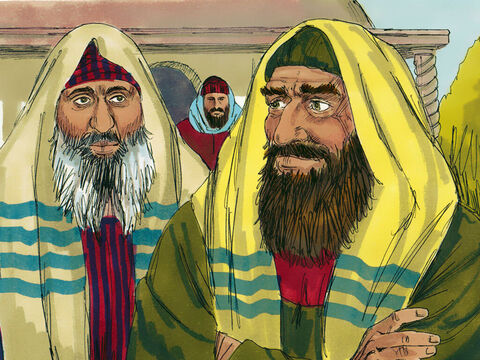
- 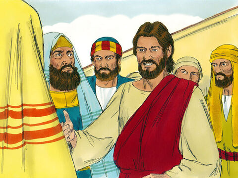
- 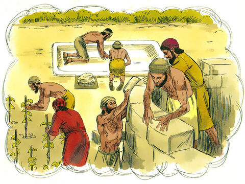
- 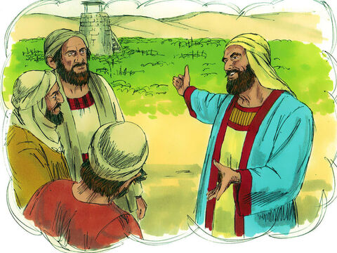
- 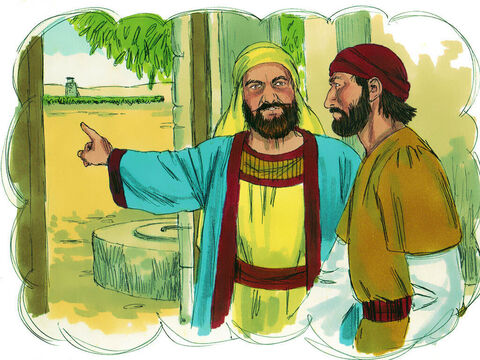
- 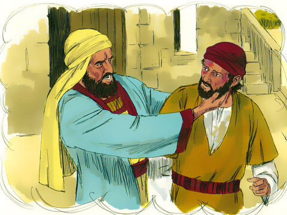
- 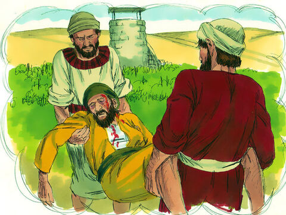
- 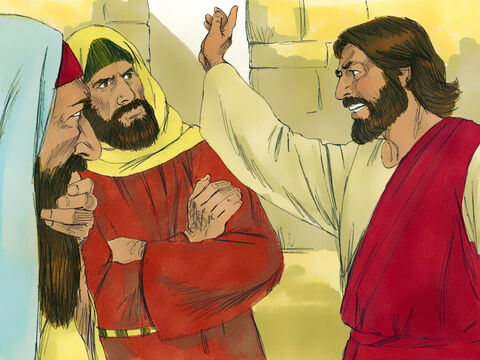
- 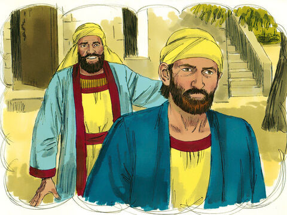
- 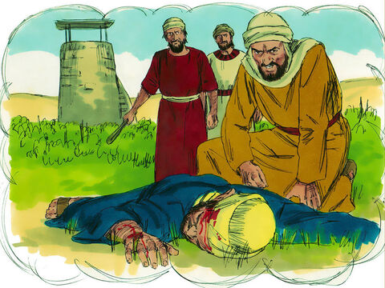
- 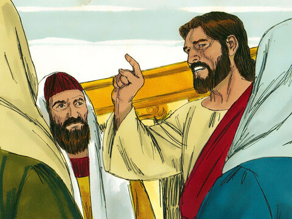
- 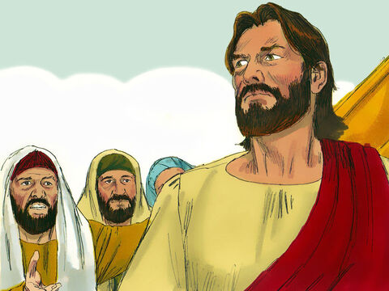
- 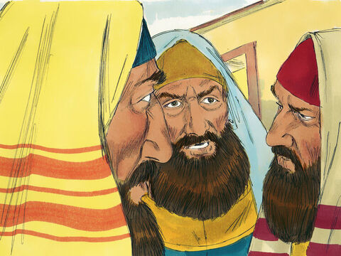